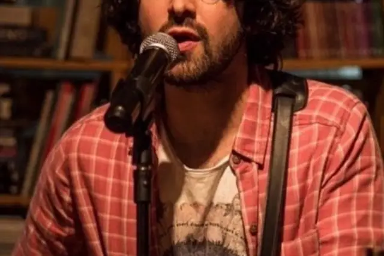

Entrevista com Jonavo, idealizador do Folk no Brasil

O cantor e compositor Jonavo vem cada vez mais se destacando na cena cultural paulistana, fomentando a música Folk no Brasil. No mês de março ele lançou seu segundo álbum, intitulado “Casulo”, contando com dez faixas produzidas por Wlajones Carvalho, no Estúdio Pacote. No disco também é possível encontrar a participação de Renato Teixeira, Corcel, Lauro Pirata e Maria Eugênia.
Jonavo é um dos idealizadores do festival “Folk+Brasil”, o primeiro evento brasileiro a juntar gerações de artistas do estilo. Além disso ele também foi um dos criadores do “Sunday Folk”, faz parte do projeto “Folk na Kombi” e já fez apresentação até mesmo no aclamado festival Rock in Rio de 2017. E o Papo Alternativo teve a honra de poder entrevistar o artista, falando sobre sua carreira e seu processo de criação musical.
(Papo Alternativo) Quando e como você descobriu-se engajado com o estilo Folk?
(Jonavo) Quando me mudei pra São Paulo e percebi que estava apenas com o meu violão. Precisamos estreitar a nossa relação.
(Papo Alternativo) Sabemos que o Folk ainda é um estilo que está crescendo no Brasil. Você encontra dificuldades em atuar com ele?
(Jonavo) Sempre hâ dificuldade em trabalhar com autoral. Acho que o estilo por ter uma cena acaba ajudando. Há bastante gente interessada em conhecer a “novidade”
(Papo Alternativo) Quais são as inspirações para a criação de suas músicas?
(Jonavo) Viver é a maior das inspirações. No fim eu escolhi uma vida pra mim que me mantem inspirado a maior parte do tempo. Se eu estou andando na rua e uma cena do cotidiano me chama a atenção, como uma frase que o açougueiro grita com a faca na mâo, isso acaba virando musica. São muitas formas.
(Papo Alternativo) Quais são todos os projetos que você participa?
(Jonavo) Como participo de uma cena, trabalho com muita gente, vários artistas e projetos, como Folk na Kombi, Sunday Folk, Folk + Brasil. Também tenho um escritório de produções artísticas. Trabalho com a Corcel, a Magê e o Renato Pacheco.
(Papo Alternativo) Como é sua rotina com a música? Seu dia-a-dia de trabalho.
(Jonavo) Não tem muita rotina. Eu tenho um escritório onde fazemos arte, e fica na minha casa, no casulo. Eu tenho reuniões, eu ensaio, vou ao banco, recebo amigos, faço musica. Sempre no movimento das idéias.
(Papo Alternativo) Quem está com você nessa caminhada? Músicos, assessores, etc.
(Jonavo) Tenho a possibilidade de trabalhar com amigos. Estamos juntos a bastante tempo, o Pit de Souza que toca baixo na minha banda é meu parceiro na produtora, o Wlajones Carvalho é o baterista e produtor musical, Gustavo Mugnatto é o guitarrista da banda. Também temos uma produtora a Marylu Garcia que faz as coisas funcionarem.
(Papo Alternativo) Quais são os planos para ainda esse ano em sua carreira?
(Jonavo) Eu queria só assistir o Rock In Rio ano passado e acabei tocando. Nessa lógica esse ano quero assistir o Coachella. Rs
Você pode conhecer mais sobre o trabalho de Jonavo através de sua página no facebook. E ficamos com o vídeo de “Envelhecer com você” ao vivo no Estúdio: